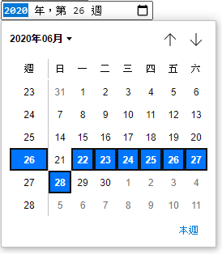

簡介
Input 有許多常用的屬性，例 type="button" 、type="number"、type="password"、type="checkbox"、type="date" … 等，關於日期和時間類除了基本的 type="date" 外還有另外 4 個十分方便的屬性，以下就要來說明。
month 年月
1 | <input type="month"> |
只會有年份和月份可以選取，又可以 設定預設值 value 和 限制可選範圍 [ 最早從min 、最後至 max ]
1 | <input type= "month" |
date 年月日
1 | <input type="date" |
- 預設日期
value - 限制可選日期起始日
min - 限制可選日期結束日
max
time 時間
1 | <input type="time" |
關於時間的選擇還可以使用 step="1" 增加秒數欄位，但 目前這功能在有些瀏覽器會看不到的情況 ，使用時要注意。
datetime-local 本地年月日 + 時間
1 | <input type="datetime-local" |
- 日期後要加上 T 就可再接上時間設定
- 時間可加上
step="1"呈現秒數欄位
week 呈現年份 + 週數
1 | <input type="week" |

- 可使用
step="1"代表可選擇每一週，step="2"時就會是每月的 2 週才可選